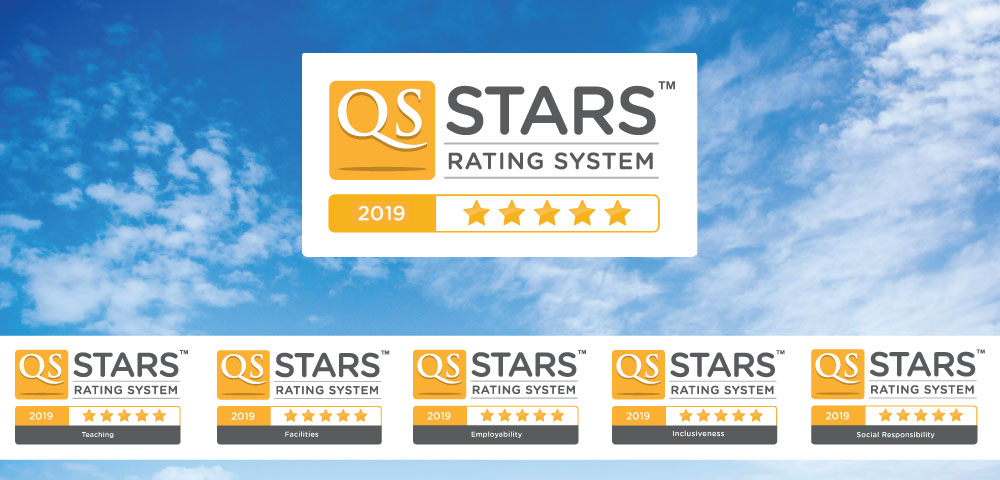

Why INTI
- Sunway University is a benchmark for education excellence and strives to constantly go beyond expectations. In accordance with this aim, the University is proud of its specially-designed programmes that have been quality assured by Malaysia’s stringent regulatory body, the Malaysian Qualifications Agency (MQA).
- In 2019, the University was ranked among the top 2% of institutions in Asia by the Quacquarelli Symonds (QS) Asia University Rankings. It also received an overall Five-Star rating in the QS Stars 2018* University Ratings, as well as obtained Five-Star ratings for the individual categories of “Teaching”, “Facilities”, “Employability”, “Social Responsibility” and “Inclusiveness”.
- Additionally, the University has maintained its rating as a five-star institution in the national University and University College Excellence (SETARA-2017) assessment since 2009, as well as gained ISO 9001 certification for the University’s provision of higher education and research management.
- For the University’s dedication in offering first-rate digital technology programmes, the University has been awarded the Premier Digital Technology University status by the Malaysian Digital Economy Corporation in 2017. In the 2017 Student Barometer Survey Entry Wave, the University was rated first in Asia for “Laboratories”, “Physical Library”, “Technology” and “Campus Buildings”, and first in Malaysia for “Overall Aspects of Institutional Experience”, which includes various categories such as “Safety”, “Virtual Learning” and “Sports Facilities”.
